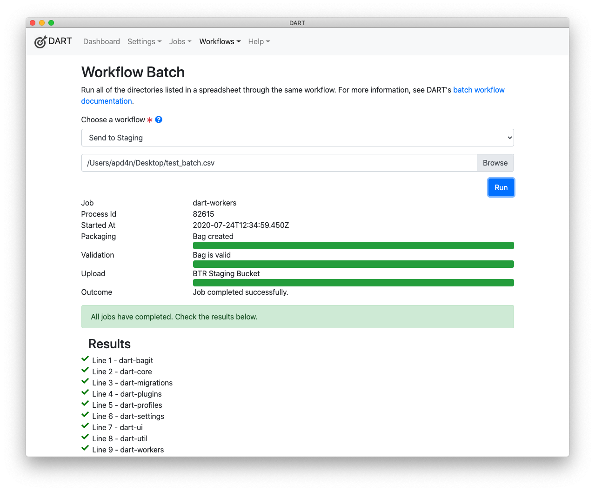

Batch Jobs
Batch jobs allow you to define a series of jobs in a spreadsheet and then run all of the jobs through the same workflow. Note that a workflow typically includes a BagIt profile, often with default tag values already filled in, and one or more upload targets.
When you run a batch of jobs through a workflow, all steps of that workflow are applied to every item in the batch. For example, that could mean bagging up 1000 directories using the APTrust BagIt profile and sending them all to APTrust's demo or production environment.
Batch jobs are not limited to APTrust. Your bags can conform to any BagIt profile and be uploaded to any SFTP or S3-compliant server.
Batch Spreadsheet Requirements
Your spreadsheet must meet the following requirements:
- The first line must contain column names.
- The sheet must contain the following columns:
- Bag-Name - The name of the bag you wish to create.
- Root-Directory - The absolute path to the directory containing the files you want to bag.
- You must include one column for each required tag in tag in your workflow's
BagIt profile. The column header for each tag must be in the format
tag_file_name.txt/tag-name. For example,bag-info.txt/Source-Organization, oraptrust-info.txt/Storage-Option. - Your file may omit tags whose default values are already defined in your BagIt profile. (See Customizing a Tag for more info on how to set default tag values in your bagging profiles.)
- Your file may include extra tags not defined in your workflow's BagIt
profile. For example, if you include a column named
bag-info.txt/Custom-Tag, DART will add the tagCustom-Tagto thebag-info.txtfile of each bag, along with the value specified in that bag's row. Addingcustom-tag-file.txt/My-Tagwill cause DART to create a tag file for each bag calledcustom-tag-file.txtand addMy-Tagto it, along with the appropriate value. - You must save your spreadsheet as a CSV (comma separated value) file so DART can read it. Both Microsoft Excel and Google Sheets can export to CSV format.
Example Spreadsheet
The sample spreadsheet below defines a batch job to bag up DART source files. Note that it includes definitions for tags required by the APTrust BagIt profile, including the Source-Organization tag in bag-info.txt and the Title, Description, Access, and Storage-Option tags in aptrust-info.txt.
Use the right and left arrow keys to scroll sideways in the sheet. You'll see a
custom tag at the end called bag-info.txt/Custom-Tag. This tag is not defined
in any BagIt profile, but DART will add it to all the bags in the batch and the
bag will still be valid because BagIt profiles define only what must be
present and do not prohibit what may be present.
Running a Batch Job
1. Choose Run Batch from the Workflows menu.

2. Select a Workflow from the list and choose a CSV file. The image below
shows the Send to Staging workflow and the CSV file /Users/apd4n/Desktop/test_batch.csv.

3. Click the Run button. DART will show the progress of each job as it runs, and will show the outcome of each job as it completes. In the image below, all nine jobs completed successfully.

Notes on Batch Jobs
- DART runs each job in a batch as a separate process.
- DART runs jobs one at a time because bagging involves a lot of disk reads and writes.
- If you try to run a job with an invalid workflow, or your CSV file points to directories and files that don't exist, DART will display the errors and will not run the batch.
- Individual jobs within the batch may fail. The most common reason for failure is lack of file permissions on one or more files to be bagged. If a job fails, DART will display the reason for failure and will continue running the other jobs in the batch.
- You must stay on the Workflow Batch screen until all jobs in the batch are complete. If you navigate away from that screen, DART will complete the currently-running job but will not run the remaning jobs in the CSV file.
Common Problems
-
DART complains about missing or empty values in the CSV file.
First, make sure the values are actually present in the file.
Excel sometimes exports a number of empty rows at the end of a CSV file. If DART complains about missing values, open the CSV file in a text editor and delete the empty rows. These often appear as lines containing nothing but commas.
-
DART says required tag values are missing, but they appear to be in the CSV file.
Make sure the column headers are correct. A common error is to have headers like
bag-info/Source-Organizationinstead ofbag-info.txt/Source-Organization. The.txtis required to match the tag from the CSV file to the tag in your workflow's BagIt profile. You should also ensure that capitalization and hyphenation match. -
DART says a job failed because of
EACCESS Cannot read <some file>.Check the file permissions on the file DART complained about. Although you may have read permissions on most of the files you're trying to bag, you may be lacking permissions on one or two. That's enough to cause the job to fail. If you're bagging files from a shared network drive, you may have to ask a system administrator for help in setting file permissions.
Note
Batch jobs are new in DART 2.0.9 (released July 24, 2020). If you find bugs, please report them to the DART GitHub repostory or to help@aptrust.org.